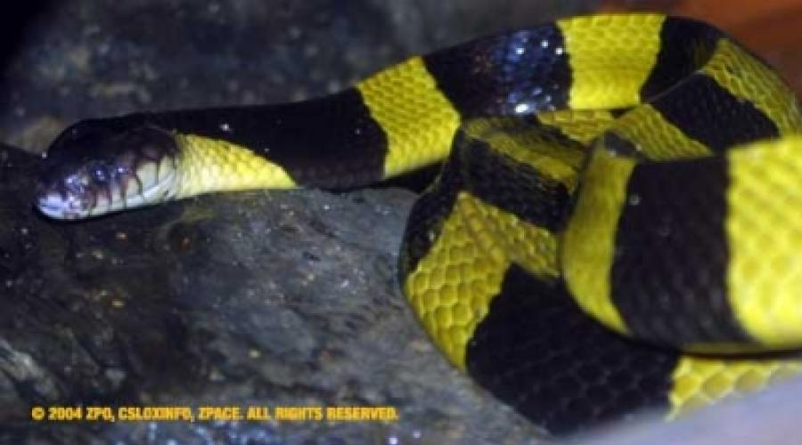
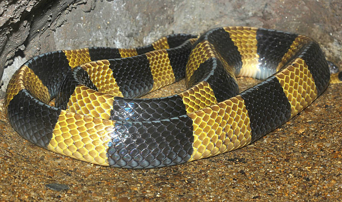

.jpg)

.jpg)

งูสามเหลี่ยม/งูทับทางเหลือง (ฺBanded Krait)
ชื่อวิทยาศาสตร์: Bungarus Fasciatus
ลักษณะทั่วไป
เป็นงูขนาดกลางถึงใหญ่ ความยาวลำตัวโดยเฉลี่ยอยู่ที่ 1.2 ถึง 1.5 เมตร แต่ในตัวที่สมบูรณ์เต็มที่อาจยาวได้ถึง 2.12 เมตร ลำตัวมีความหนา แข็งแรง และมีกล้ามเนื้อแน่นหนา เมื่อมองจากด้านตัดขวาง (Cross-section) ลำตัวของงูชนิดนี้จะไม่เป็นทรงกลมเหมือนงูทั่วไป แต่จะมีลักษณะเป็นรูปสามเหลี่ยมอย่างเห็นได้ชัด โดยมีแนวสันกระดูกสันหลังโปนปูดสูงขึ้นมาเป็นยอดสามเหลี่ยมตามยาวตลอดลำตัว ตั้งแต่ช่วงคอไปจนถึงโคนหาง ลำตัวมีลวดลายเป็นปล้องสลับระหว่าง สีเหลืองสด (หรือสีเหลืองอมครีม) กับ สีดำเข้ม (หรือสีน้ำเงินดำ) วางตัวขนานกันตลอดแนวลำตัวตั้งแต่คอจนถึงปลายหาง ปล้องสีดำและสีเหลืองมีความกว้างที่แทบจะเท่ากัน หรือใกล้เคียงกันมาก ปล้องสีเหลืองและดำนี้ไม่ได้อยู่เฉพาะด้านหลัง แต่จะพาดคาดรอบลำตัวลงไปถึงบริเวณเกล็ดใต้ท้อง (Ventral scales) ซึ่งแตกต่างจากงูชนิดอื่นที่มักมีสีท้องเป็นสีพื้นขาวหรือเทา เกล็ดบริเวณหัวเรียบใหญ่เป็นแผ่น มีจุดเด่นสำคัญคือลวดลายสีเหลืองรูปตัว V หรือปานสีเหลืองที่พาดอยู่บริเวณหลังหัวจรดท้ายทอย ตัดกับสีดำเข้มบนส่วนหน้าของหัวอย่างชัดเจน ม่านตามีสีดำสนิท กลมมน เหมาะกับการมองเห็นในมืด งูสามเหลี่ยมเป็นงูที่ล่าและกินงูชนิดอื่นเป็นอาหารหลัก โดยเฉพาะงูขนาดเล็กถึงขนาดกลาง ทั้งงูไม่มีพิษ (เช่น งูสิง งูทางมะพร้าว) และงูพิษด้วยกันเอง นอกจากงูแล้ว ยังจับสัตว์เลื้อยคลานและสัตว์ครึ่งบกครึ่งน้ำ เช่น จิ้งเหลน กิ้งก่า กบ และเขียด กินเป็นอาหาร
ถิ่นอาศัย พิษ และความอันตราย
- ถิ่นอาศัย: พบกระจายตัวอยู่ทั่วไป ทั่วทุกภาคของประเทศไทย ไม่ว่าจะเป็นภาคเหนือ ภาคกลาง ภาคอีสาน ภาคตะวันออก หรือภาคใต้ นอกจากนี้แล้วยังพบกระจายพันธุ์อย่างกว้างขวางตั้งแต่อินเดีย บังกลาเทศ เนปาล ภูฏาน ทางตอนใต้ของประเทศจีน (รวมถึงเกาะไหหลำ และฮ่องกง) เมียนมา ลาว กัมพูชา เวียดนาม มาเลเซีย สิงคโปร์ บรูไน และอินโดนีเซีย (เช่น เกาะสุมาตรา, ชวา, บอร์เนียว, บาหลี) งูสามเหลี่ยมชอบอาศัยอยู่ในพื้นที่ที่มี ความชื้นค่อนข้างสูง และมีแหล่งน้ำหรือแหล่งอาหารสมบูรณ์ เช่น พื้นที่ชุ่มน้ำและแหล่งน้ำธรรมชาติ พื้นที่การเกษตร ป่าธรรมชาติ ในเวลากลางวันมักหลบซ่อนตาม จอมปลวก, โพรงดิน, รูหนูเก่า, โพรงไม้, กองไม้, หรือซุกตัวอยู่ใต้กองใบไม้ทับถม
- พิษ:พิษออกฤทธิ์ทำลายระบบประสาทอย่างรุนแรง(Neurotoxic) พิษจะตรงเข้าขัดขวางการทำงานของระบบประสาทส่วนปลายและจุดเชื่อมต่อระหว่างประสาทกับกล้ามเนื้อ (Neuromuscular junction) ทำให้สัญญาณประสาทไม่สามารถสั่งการไปยังกล้ามเนื้อได้ อาการแรกที่สังเกตุได้ชัดเจนจะเริ่มขึ้น 3 ชั่วโมงหลังถูกกัด โดยจะมีอาการง่วงซึม อ่อนเพลีย ตาปรือ ลืมตาไม่ขึ้น (Ptosis) เห็นภาพซ้อน น้ำลายไหล ย้อย กลืนน้ำลายหรืออาหารลำบาก พูดไม่ชัด เสียงอ้อแอ้ คอตกยกหัวไม่ขึ้น หากปล่อยไว้ไม่รักษา อาการจะยิ่งร้ายแรง อัมพาตลามลงสู่กล้ามเนื้อแขนและขา กล้ามเนื้อกะบังลมและกล้ามเนื้อยึดซี่โครงหยุดทำงาน หากไม่ได้รับเครื่องช่วยหายใจและเซรุ่มแก้พิษงูทันเวลา ผู้ถูกกัดจะตายจากการขาดอากาศหายใจ ความน่ากลัวคือ ผู้ถูกกัดจะแทบไม่รู้สึกเจ็บแผล ทำให้บางครั้งจึงไม่รู้ตัวด้วยซ้ำว่าถูกกัด รู้ตัวอีกทีก็ตอนลงไปนอนเฝ้ารากมะม่วงเรียบร้อยแล้ว
- ระดับความอันตราย: อันตราย ☠☠☠☠: พิษรุนแรง กัดไม่เจ็บ ผู้ถูกกัดอาจไม่รู้ตัว แต่นิสัยไม่ค่อยดุ มักหาจังหวะเลื้อยหนีมากกว่าจะตั้งการ์ดแบบงูเห่า จึงยังไม่อันตรายที่สุด
Fun Fact
- สองขั้ว สองบุคลิก: ในเวลากลางวัน งูสามเหลี่ยมจะขี้อาย ไม่ก้าวร้าว มักนอนขดตัวเอาหัวซุกไว้ใต้ลำตัว หากถูกรบกวนมักเลือกที่จะเลื้อยหนีหรือขดตัวแน่น จะพยายามไม่กัด ผิดกับในเวลากลางคืนที่พวกมันจะตื่นตัวสูง ฉับไว ก้าวร้าว และพร้อมกัดทันทีโดยไม่ลังเล
- ชื่อธรรดาแต่ที่มาโคตรดาร์ก: ชื่อรอง "งูทับทางเหลือง" ไม่ได้มาเล่นๆ สมัยโบราณ หลายคนที่โดนกัดมักไม่รู้ตัวเพราะกัดไม่ค่อยเจ็บ บางคนไม่คิดว่าเป็นงูด้วยซ้ำที่กัด ผลสุดท้ายก็มักจะมาจบที่กลายเป็นศพนอนอืดทับทางเดินของคนละแวกนั้น
- หางทู่กุดสุดแปลก: ปลายหางของงูสามเหลี่ยมจะทู่มนเหมือนโดนตัดทิ้ง ต่างจากงูพิษส่วนใหญ่ที่มีปลายหางเรียวยาว ทำให้คนโบราณมักเข้าใจผิดว่าเป็นงูไม่มีพิษ